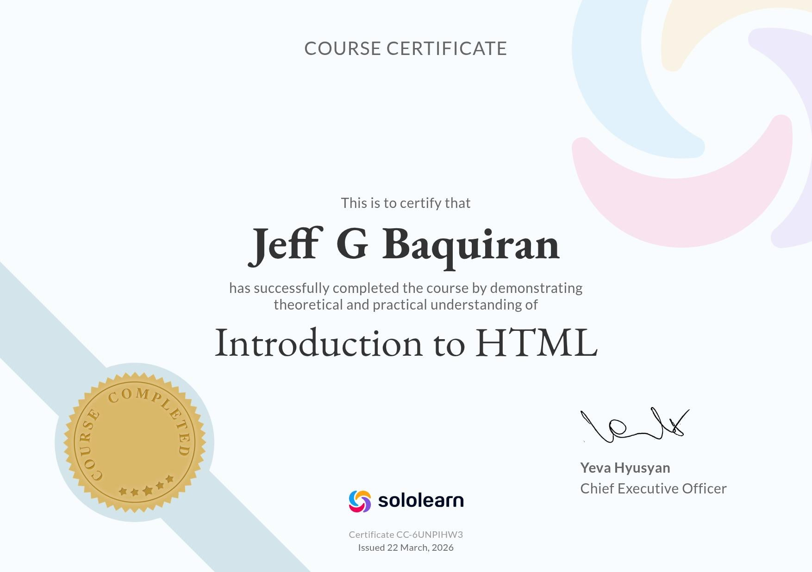
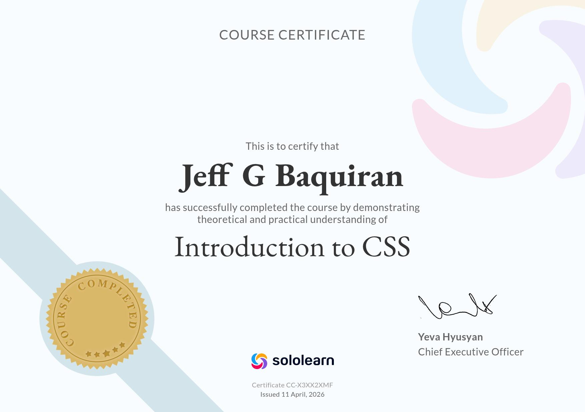
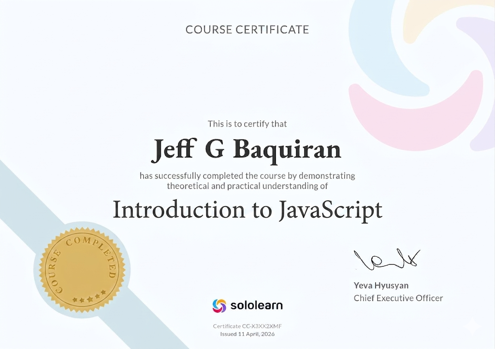

Certificate
HTML Fundamentals
Core concepts for semantic structure and accessible page layouts.
Portfolio
I design clean digital interfaces and streamline system processes through thoughtful development, semantic HTML, responsive design, and practical automation.
About Jeff
Jeff combines academic knowledge in information systems with hands-on practice in building website layouts, workflows, and simple JavaScript-driven tools. His goal is to make interfaces feel calm, functional, and intuitive.
Focus areas
Certificates
Each certificate below opens a brief overview of the skill built through focused practice on web fundamentals.

Certificate
Core concepts for semantic structure and accessible page layouts.

Certificate
Responsive layouts, visual styling, and design consistency for modern interfaces.

Certificate
Interactive page behavior, DOM updates, and scripting page workflows.